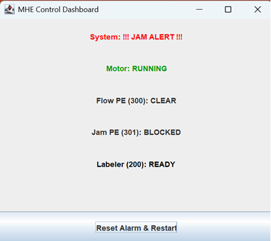
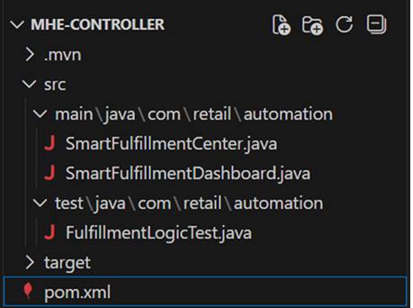
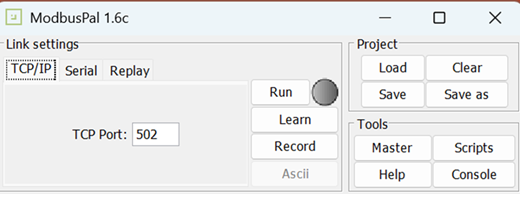
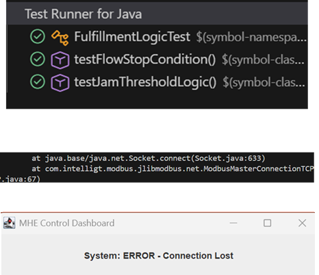
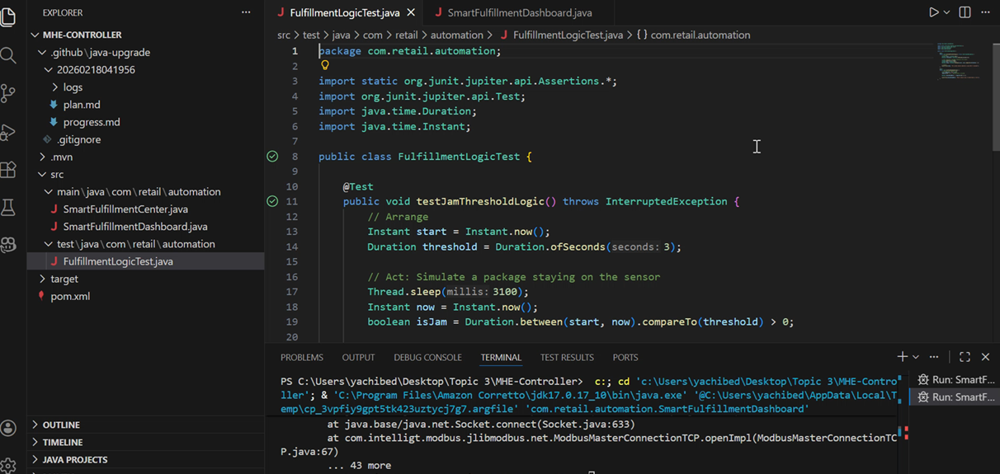

Project Overview
The application is a production-grade, Java-based Warehouse Execution System (WES) designed for a small-scale fulfillment center. It uses an event-loop architecture to coordinate real-time warehouse operations, including conveyor motor control, address labeling, photoeye-based flow control, and jam detection. The system communicates with a PLC over Modbus TCP, enabling reliable, deterministic control while supporting simulation and testing without physical hardware.
Features
- Java fundamentals: Use classes, interfaces, collections, multithreading, and exception handling to implement core control logic.
- Maven project & PLC libraries: Build a Java Maven project integrating JLibModbus or Apache PLC4X for Modbus-based PLC communication.
- Java UI/Dashboard: Develop a Java-based dashboard to visualize system states and monitor real-time PLC interactions.
- PLC simulator setup: Configure a PLC simulator to emulate warehouse sensors and actuators.
- Automated logic testing: Use JUnit 5 to validate control logic independently of physical PLC hardware.
- Manual simulation testing: Use ModbusPal to manually simulate sensors and verify system behavior against expected outcomes.
Screen Captures
Below are sample screenshots of the application in use.





Sample Code
// Sample Java class (replace with your real code)
/**
* MHE Controller for Retail Distribution
* Controls: Motors, Labeling, Flow Accumulation, and Jam Detection.
*/
public class SmartFulfillmentCenter {
// PLC Memory Map (Standard Holding Registers)
private static final int REG_MOTOR_STATE = 100; // 1=Run, 0=Stop
private static final int REG_LABEL_TRIGGER = 200; // Write 1 to apply label
// Photoeye Sensors (Starting at 300)
private static final int REG_PE_FLOW = 300; // Downstream Flow Sensor
private static final int REG_PE_JAM = 301; // Jam/Labeling Sensor
private static final int REG_ALARM_LIGHT = 500; // Alarm Stack Light
private ModbusMaster plc;
private Instant jamTimer = null;
private final Duration JAM_THRESHOLD = Duration.ofSeconds(10);
public SmartFulfillmentCenter(String ipAddress) throws Exception {
TcpParameters params = new TcpParameters();
params.setHost(InetAddress.getByName(ipAddress));
params.setPort(502);
params.setKeepAlive(true);
params.setConnectionTimeout(5000);
this.plc = ModbusMasterFactory.createModbusMasterTCP(params);
this.plc.setResponseTimeout(5000);
this.plc.connect();
}